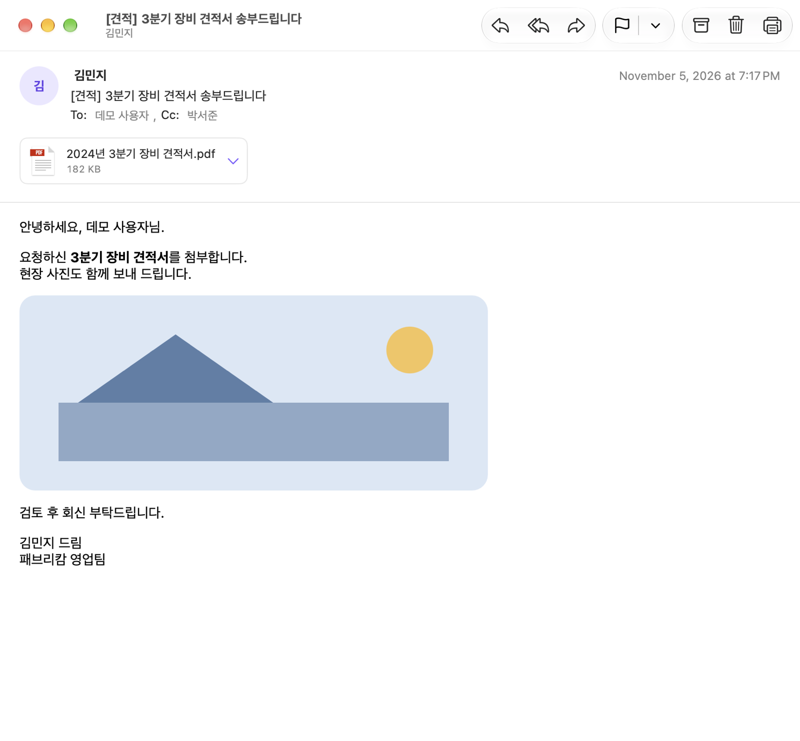
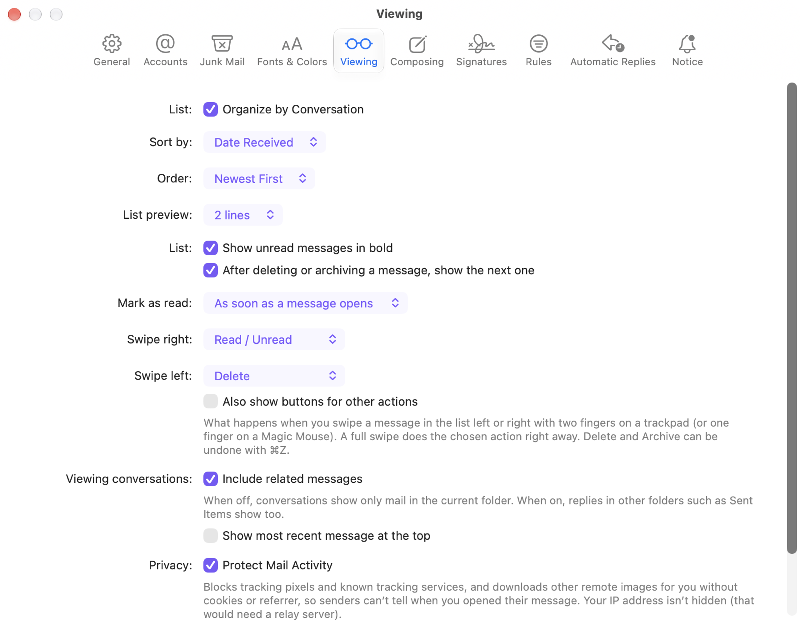

FAKUKU Mail
Work and personal mail, the Mac way.
Your company’s Microsoft 365 (Exchange Online), iCloud, and Gmail in one window. Attachments that work, conversations, instant new mail, individual sending, and Siri.
macOS 26 or later · Microsoft 365, iCloud, Gmail

Everything your mail needs
Built for people who use work and personal mail side by side.
Three accounts, one window
Sign in to Exchange with your work email, and add iCloud and Gmail with an app-specific password. See all inboxes together and choose which account sends.
Attachment names that survive
Korean and other non-Latin file names are fixed before sending so they show correctly in Outlook and older systems, and body images go along as attachments.
Conversations, together
See replies from every folder in one conversation, with the message you’re reading clearly marked — for iCloud and Gmail too.
New mail, right away
iCloud and Gmail show new mail the moment the server reports it. Mail you read or delete on your phone updates right away.
Protect Mail Activity
Tracking pixels are blocked and remote images are fetched without cookies, so senders can’t tell when you opened their mail.
Individual sending
Send one personalized message per person from HTML templates and groups, paced so it doesn’t look like spam.
Meetings and Calendar
Accept invitations right in the message and add accepted meetings to Calendar on your Mac — without duplicates when Exchange syncs too.
Keep it on your Mac
Export mailboxes as .mbox and import old mail files to keep on your Mac. They show up in All Folders search.
Siri and Shortcuts
“Read my unread mail in FAKUKU Mail.” “Flag this email.” Handle mail with your voice.
Fast, and made for the Mac
Messages are fetched ahead so they open instantly. Menus and shortcuts, trackpad swipes, recipient tokens, accent colors and Dark Mode — in Korean or English, following your Mac.
At a glance
Follows your Mac’s Light and Dark Mode.



Your mail is yours
FAKUKU Mail never sends your mail to the developer’s servers.
Questions
Which accounts work?
Microsoft 365 work or school accounts (Exchange Online), iCloud Mail, and Gmail. Add several and use them in one window. Other providers aren’t supported yet.
How do I add iCloud or Gmail?
Use an app-specific password instead of your account password. For iCloud, create one in Apple Account > Sign-In and Security > App-Specific Passwords; for Gmail, turn on 2-Step Verification and create one in Google Account > Security > App passwords. Then add it in Settings > Accounts > +. See Help for details.
It says “Admin approval required.”
Some organizations require an IT administrator to approve a new app once. Use “Copy Admin Approval Link” on the sign-in screen and send it to your administrator; after that, everyone in your organization can sign in.
Is my mail stored on my Mac?
Mail stays on each provider’s server. A copy of recent mail is kept for offline reading and removed when you remove the account. Mailboxes you import are kept under “On My Mac”.
Can I use it alongside Mac Mail, Outlook, or my phone?
Yes. They all see the same mail on the server, so read status, flags, and folders match everywhere.
Where can I learn how to use it?
Choose Help > FAKUKU Mail Help (⌘?) in the app, or visit the Help page for accounts, shortcuts, and troubleshooting.
Get started
All you need is a work email, or an iCloud or Gmail account.
macOS 26 or later · Microsoft 365, iCloud, Gmail